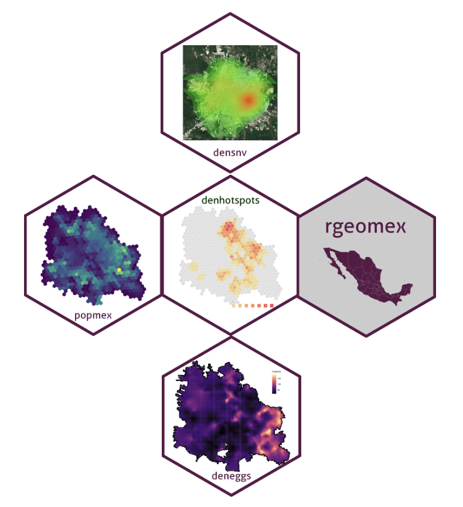
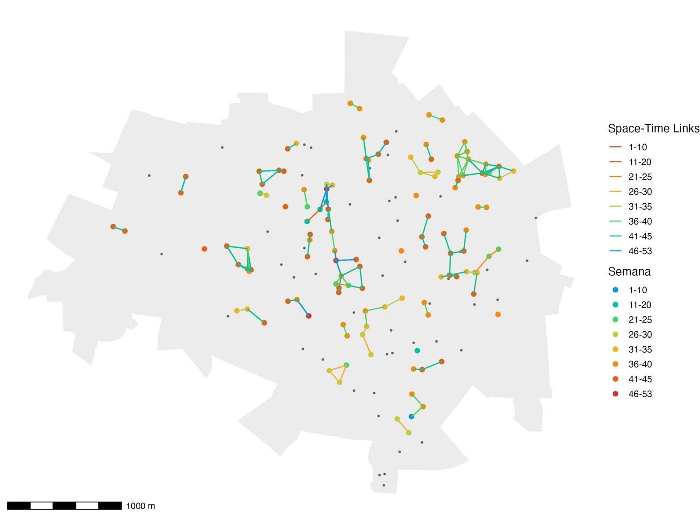

flowchart LR R["1 · R"] --> T["2 · Rtools (Windows)<br/>Xcode CLT (macOS)"] T --> I["3 · IDE<br/>RStudio u otro"] I --> P["4 · Paquetes<br/>CRAN · GitHub · r-universe"] P --> D["5 · dengueverse"] style D fill:#0b3d1e,color:#fff,stroke:#0b3d1e
Instalación de Paquetes en R
Módulo I · Requisitos básicos
Dr. Felipe Antonio Dzul Manzanilla
Dr. Fabián Correa-Morales
Creado: 2024-01-01 · Actualizado: 2026-10-24
Temario
El entorno de trabajo
Los paquetes
- Desde CRAN, GitHub, Bioconductor, r-universe y archivo local
- En Google Colab
- CRAN Task Views
- Metapaquetes, universos y verses
- El dengueverse: paquetes e instalación
¿Qué vamos a instalar?
El orden importa: sin las herramientas de compilación, los paquetes que se instalan desde GitHub o desde código fuente fallan.
Instalación de R
- Ir a cloud.r-project.org
- Elegir el sistema operativo: Windows, macOS o Linux
- Descargar la versión más reciente (en macOS, elegir Apple silicon o Intel según el equipo)
- Ejecutar el instalador con las opciones por defecto
- Verificar la versión instalada:
Herramientas de compilación
Entornos de desarrollo (IDE)
| IDE | Para qué sirve |
|---|---|
| RStudio | El IDE clásico para R; el que usaremos en el curso |
| Positron | Nuevo IDE de Posit para R y Python |
| Visual Studio Code | Editor general; requiere la extensión de R |
| Antigravity | IDE de Google con agentes de IA integrados |
| Google Colaboratory | R en el navegador, sin instalar nada |
Los paquetes los instala R, no el IDE: las mismas instrucciones install.packages(), BiocManager::install() y pak::pkg_install() funcionan igual en todos.
Instalación de RStudio
- Ir a posit.co/download/rstudio-desktop
- Confirmar que R ya está instalado (paso 1)
- Descargar RStudio Desktop para tu sistema operativo
- Ejecutar el instalador
- Abrir RStudio y revisar en la consola que aparezca la versión de R
Si tienes varias versiones de R: Tools → Global Options → General → R version.
Instalación de paquetes desde CRAN
Instalación de paquetes desde GitHub
pak resuelve dependencias del sistema y es más rápido.
Útil cuando el proyecto usa renv para fijar versiones.
Instalación de paquetes desde Bioconductor
Bioconductor es un repositorio de paquetes para bioinformática y genómica (secuencias, filogenia, genética de poblaciones de vectores).
pak también instala desde Bioconductor: pak::pkg_install("bioc::Biostrings").
Instalación desde r-universe
r-universe compila los paquetes de GitHub y los distribuye ya compilados, como si fuera CRAN: no se necesitan Rtools ni Xcode.
Es la forma más sencilla de instalar el dengueverse en las computadoras del curso.
Instalación desde un archivo local
Instalación de paquetes en Google Colab
En Colab: Entorno de ejecución → Cambiar tipo de entorno → R.
Si falta una librería del sistema (p. ej. para sf):
Colab corre en Linux: los paquetes de CRAN se compilan y pueden tardar varios minutos. Al cerrar la sesión se pierden y hay que reinstalarlos.
Instalación con CRAN Task Views
Las Task Views agrupan los paquetes de un tema.
Desafío
Instalar los paquetes principales de tres Task Views:
Metapaquetes, universos y verses
- Metapaquete: un paquete que instala y carga otros paquetes (ej.
tidyverse,easystats,tidymodels). - Universo: un repositorio propio de paquetes en r-universe (ej. fdzul.r-universe.dev).
- Verse: una familia de paquetes con un objetivo común y un mismo estilo.
- Ejemplos: ETVerse, IVAverse y dengueverse
Universo de Vectores en R
flowchart TB V[Vectores] --> ET[ETVerse] & IVA[IVAverse] & TR[transverse] ET --> DV[dengueverse] & CH[chagasverse] & LE[leisverse] & MA[malverse] IVA --> AL[alaverse] & AR[araverse] DV --> DH[denhotspots] & DE[deneggs] & DS[densnv] & BO[boldenr] & DC[dencontrol] & DK[denepikit] TR --> RG[rgeomex] & PO[popmex] & CL["climex (Python)"] classDef disp fill:#0b3d1e,color:#fff,stroke:#0b3d1e classDef dev fill:#fff,color:#555,stroke:#999,stroke-dasharray:4 3 classDef gh fill:#fff,color:#0b3d1e,stroke:#0b3d1e,stroke-width:2px classDef grupo fill:#5a1846,color:#fff,stroke:#5a1846 class DH,DE,DS,BO,RG,PO disp class DK,CL gh class DC dev class V,ET,IVA,TR,DV grupo
Verde: en r-universe · Borde verde: en GitHub · Punteado: en desarrollo
dengueverse

El dengueverse es un universo de paquetes de R para el análisis y la toma de decisiones en el Programa de Prevención y Control del Dengue en México.
| Paquete | Para qué |
|---|---|
| rgeomex | Cartografía (INEGI / INE) |
| popmex | Población |
| densnv · boldenr | Bases del SINAVE |
| denhotspots | Hotspots y transmisión activa |
| deneggs | Ovitrampas y vector |
rgeomex
Bases de datos geográficas del INEGI y del INE a distintas resoluciones: estatal (AGEE), municipal (AGEM), localidades, sectores, AGEB y manzanas.
Funciones clave: extract_locality() · extract_ageb() · extract_blocks() · extract_sectores()
popmex

Bases de datos de población de México a nivel municipal y en hexágonos:
- Proyecciones de CONAPO y censos 2000, 2010 y 2020
- Densidad de población HDX 2021–2023 (400 m de resolución)
Funciones clave: extract_pop() · get_landscan()
densnv & boldenr
Análisis de las bases de las Enfermedades Transmitidas por Vector del SINAVE mediante gráficas, tablas y mapas, para apoyar decisiones racionales y oportunas en los programas de ETV. boldenr genera los productos del boletín de dengue (canales endémicos, mapas de calor, serotipos).
Funciones clave: read_dengue_dataset() · cases_week() · mp_heatmap() · epidemiological_channel()
denhotspots
Análisis espacial del dengue con el estadístico local Gi* (hotspots de transmisión persistente) y análisis espacio-temporal de la transmisión activa: prueba de Knox, cadenas de transmisión y modelo Log-Gaussian Cox Process.
Funciones clave: gihi() · knox() · transmission_chains_map() · spatial_lgcp() · risk_ageb()
denhotspots: cadenas de transmisión

Casos de dengue vinculados en espacio y tiempo, coloreados por semana epidemiológica.
deneggs
Genera mapas predictivos del número de huevos de Aedes aegypti en las áreas donde no se colocan ovitrampas, mediante análisis geoestadístico con SPDE-INLA, e identifica los hotspots del vector.
Funciones clave: ovitraps_read() · spde_inla() · eggs_map() · eggs_hotspots()
Instalación del dengueverse
Una sola instrucción instala los paquetes del dengueverse y sus dependencias que no están en CRAN (knox, ppmData), ya compiladas:
Desde GitHub (requiere Rtools/Xcode): pak::pkg_install("fdzul/denepikit"). climex es un paquete de Python: pip install climex.
deneggs e INLA
deneggs requiere INLA, que no está en CRAN, y similiars, que se instala desde r-universe:
SaTScan
Para el análisis de conglomerados espacio-temporales:
- Descargar e instalar el programa SaTScan (gratuito)
- Instalar el paquete de R que lo conecta:
Verificar la instalación
Si alguno sale FALSE, revisar la siguiente diapositiva.
Problemas comunes
| Mensaje o síntoma | Causa probable | Solución |
|---|---|---|
non-zero exit status |
Faltan herramientas de compilación | Instalar Rtools / Xcode CLT, o usar r-universe |
Permission denied / lib is not writable |
Sin permisos en la carpeta de R | Aceptar la librería personal que propone R |
API rate limit exceeded |
Demasiadas descargas desde GitHub | Usar r-universe o configurar un GITHUB_PAT |
| No descarga nada en la red institucional | Proxy o firewall | Probar con otra red o pedir acceso a soporte |
package ... is not available |
Nombre mal escrito o no está en CRAN | Revisar el nombre y el repositorio |
Contacto
- Bio: https://fdzul.github.io/web_site_fadm/
- Correo: felipe.dzul.m@gmail.com
- Celular: 999 958 0167
- GitHub: https://github.com/fdzul
- dengueverse: https://fdzul.r-universe.dev
- Presentación: https://calm-hummingbird-41cb33.netlify.app/talks/pkg_installation/#/